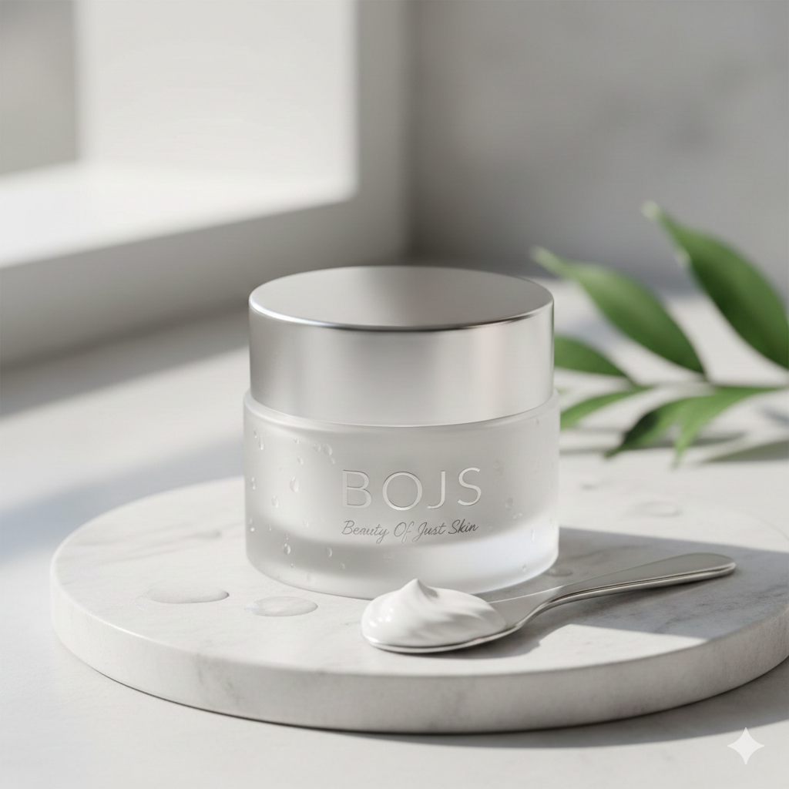
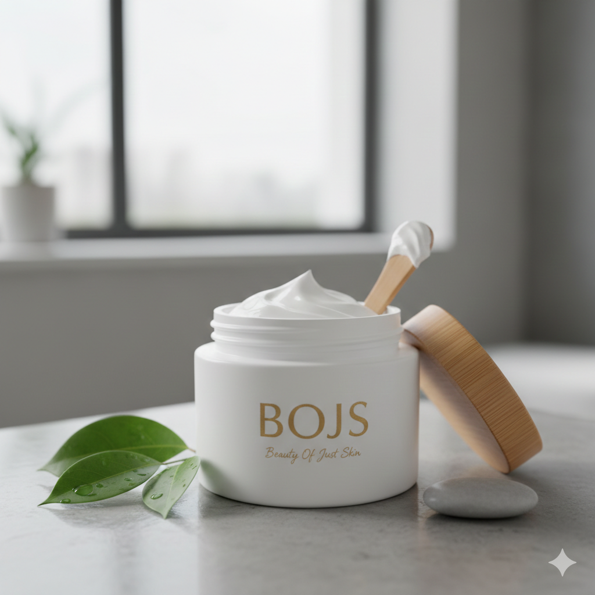
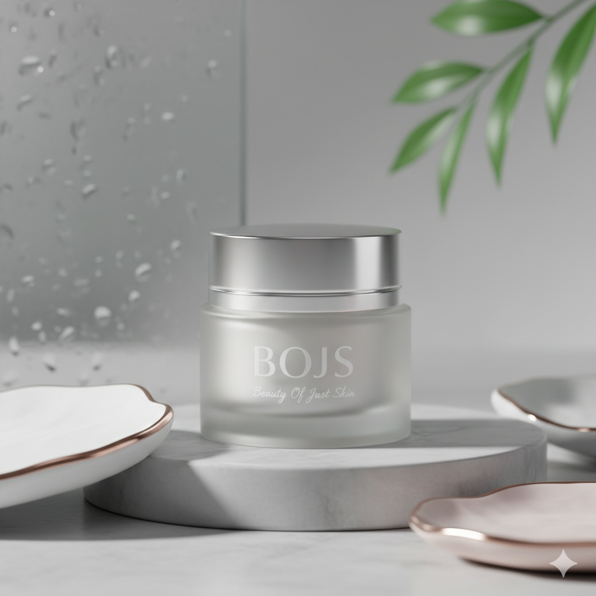
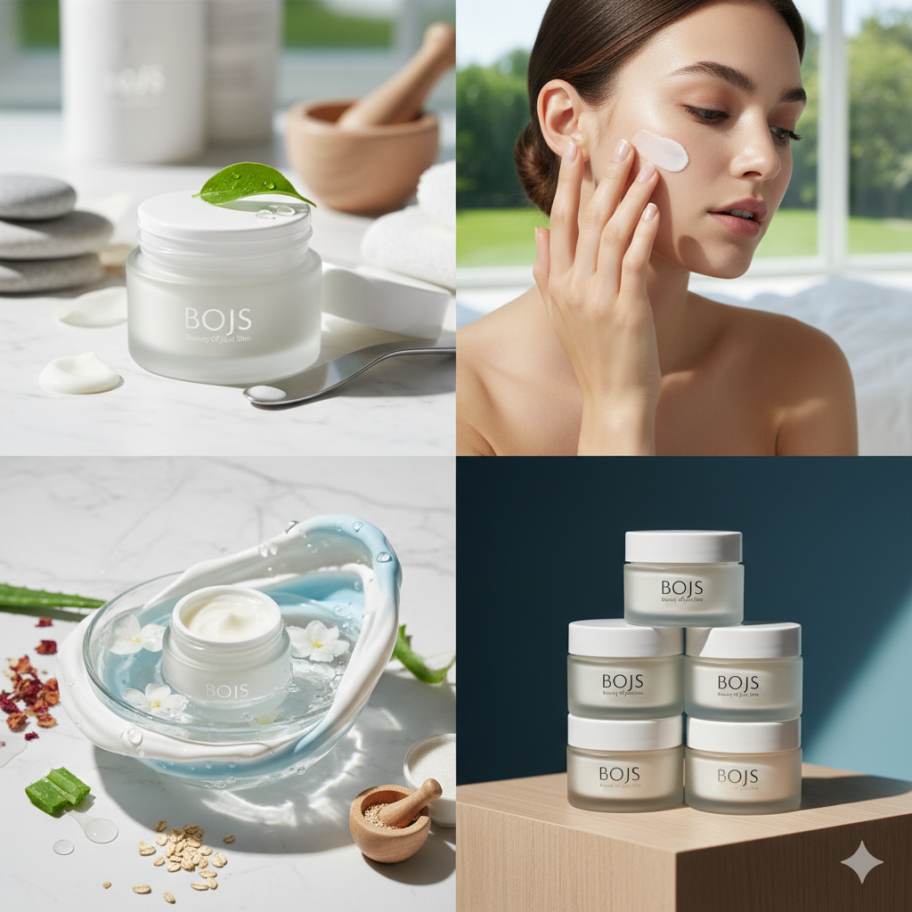

Call Us: 123-456-789
Sign up and get 60% OFF for your first purchase.Sign up now

SHOP
Home
Shop
Skin Care
Makeup
Hair Care
About Us




Skin Care
BOJS Facial Cream - Crème pour le visage 180mL50% OFF
$ 7.50 $ 14.99
lightweight, velvety formula that sinks in instantly, providing 24-hour misture without the grease.
Size/Volume
70mL
100mL
150mL
180mL
Add to cart
Buy now
Description
Reviews (★ 4.9)
In a world of complicated routines and harsh chemicals, BOJS returns to the essentials. Our signature facial cream is designed to celebrate the natural texture and resilience of your skin. It’s not about covering up; it’s about revealing the Beauty Of Just Skin.
Why You'll Love It
Deep Hydration: A lightweight, velvety formula that sinks in instantly, providing 24-hour moisture without the grease.
Minimalist Formula: We use only what your skin needs—nothing more. Perfect for sensitive skin looking for a calm, soothing touch.
The "Just Skin" Finish: Leaves a soft, dewy glow that looks like you, just on your best skin day.
Ethical Beauty: Vegan, cruelty-free, and packaged in a sleek, sustainable frosted glass jar.
In controlled consumer trials, the BOJS formula demonstrated measurable improvements in skin health markers:
• 92% of participants reported an immediate increase in skin elasticity.
• 88% showed a visible reduction in fine lines caused by dehydration after 14 days of consistent use. • 100% of subjects tested with sensitive skin profiles reported zero irritation or adverse reactions.
Our "Just Skin" philosophy is a commitment to transparency. We exclude over 1,300 restricted ingredients commonly used in the industry, focusing instead on a concentrated list of 15 high-purity actives. When you choose BOJS, you are choosing a mathematically optimized solution for skin health. If your goal is long-term dermal health rather than temporary cosmetic masking, the logic is simple. BOJS is the essential variable in your skincare equation.
Why You'll Love It
Deep Hydration: A lightweight, velvety formula that sinks in instantly, providing 24-hour moisture without the grease.
Minimalist Formula: We use only what your skin needs—nothing more. Perfect for sensitive skin looking for a calm, soothing touch.
The "Just Skin" Finish: Leaves a soft, dewy glow that looks like you, just on your best skin day.
Ethical Beauty: Vegan, cruelty-free, and packaged in a sleek, sustainable frosted glass jar.
In controlled consumer trials, the BOJS formula demonstrated measurable improvements in skin health markers:
• 92% of participants reported an immediate increase in skin elasticity.
• 88% showed a visible reduction in fine lines caused by dehydration after 14 days of consistent use. • 100% of subjects tested with sensitive skin profiles reported zero irritation or adverse reactions.
Our "Just Skin" philosophy is a commitment to transparency. We exclude over 1,300 restricted ingredients commonly used in the industry, focusing instead on a concentrated list of 15 high-purity actives. When you choose BOJS, you are choosing a mathematically optimized solution for skin health. If your goal is long-term dermal health rather than temporary cosmetic masking, the logic is simple. BOJS is the essential variable in your skincare equation.
Elena S. (★★★★★ 5)
"Finally, a cream that doesn't rely on 'filler' ingredients. I’ve been using BOJS for three weeks, and the logical difference is clear. Most moisturizers feel like they just sit on top of the skin, but this formula absorbs instantly. My skin's hydration levels feel stabilized throughout the entire workday, even in a dry office environment. It’s effective, honest, and worth every penny."

David K. (★★★★★ 5)
"The science behind the pH-balance of this product is what sold me. I used to experience redness after application with other brands, but BOJS is incredibly soothing. The glass jar and the silver applicator are high-quality, but it’s the non-comedogenic formula that really delivers. It provides a visible dewiness without the heavy, greasy weight of traditional night creams."
Maya L. (★★★★☆ 4)
"I appreciate the minimalist approach. As someone who avoids synthetic fragrances and harsh chemicals, the BOJS ingredient list is refreshing. It’s an excellent base for makeup—it smooths the skin texture almost like a primer but with actual dermatological benefits. My only critique is that I wish there was a travel-sized version for my gym bag!"
Explore Related Products
>

30% off
Skin Care
ARKIVE Hybrid Oil Huile Pour Cheveux 50mL, 1.7fl oz (US)
$ 13.99 $ 19.99

25% off
Skin Care
HOUSE OF SENSES Hand Cream 100mL
$ 20.24 $ 27.00

46% off
Skin Care
Arencia's Lavender Mild pH Balancing Rice Cake Cleanser Ceramide 150g, 5.29oz
$ 15.12 $ 28.00
Group Members
PASCUAL, Rick Justine
COLICO, Alliyah Askly
BAUSTISTA, Charlyn Maricon
PILLOS, Jennica Mae
LAPIDEZ, Lil Justin
MENDOZA, Lyra Kriz
MAGLASANG, Dale David
SOMBISE, Rhizzie Chris
JAPAY, Trista Mae
COLICO, Alliyah Askly
BAUSTISTA, Charlyn Maricon
PILLOS, Jennica Mae
LAPIDEZ, Lil Justin
MENDOZA, Lyra Kriz
MAGLASANG, Dale David
SOMBISE, Rhizzie Chris
JAPAY, Trista Mae